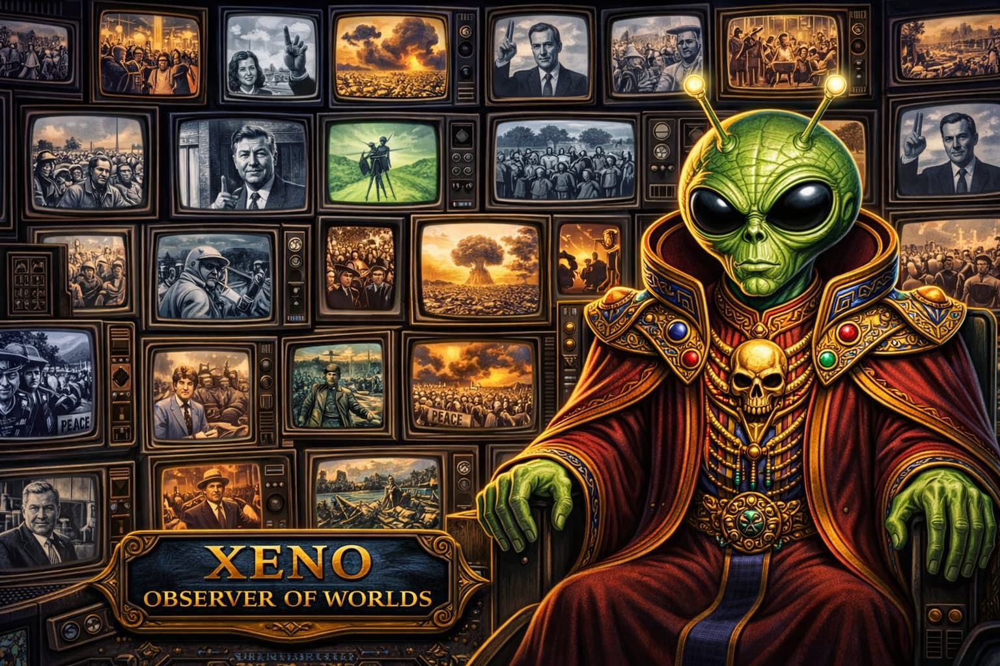

<!DOCTYPE html>
<html lang="en">
<head>
    <meta charset="UTF-8">
    <meta name="viewport" content="width=device-width, initial-scale=1.0">
    <title>XENO — Observer of Worlds · HIST 102</title>
    <script crossorigin src="https://unpkg.com/react@18/umd/react.production.min.js"></script>
    <script crossorigin src="https://unpkg.com/react-dom@18/umd/react-dom.production.min.js"></script>
    <script src="https://unpkg.com/@babel/standalone/babel.min.js"></script>
    <link href="https://fonts.googleapis.com/css2?family=Space+Mono:ital,wght@0,400;0,700;1,400&family=Outfit:wght@300;400;500;600;700&display=swap" rel="stylesheet">
    <style>
        @keyframes pulse-glow {
            0%, 100% { opacity: 0.4; }
            50% { opacity: 1; }
        }
        @keyframes typing-dot {
            0%, 80%, 100% { transform: translateY(0); opacity: 0.3; }
            40% { transform: translateY(-6px); opacity: 1; }
        }
        @keyframes fade-in-up {
            from { opacity: 0; transform: translateY(12px); }
            to { opacity: 1; transform: translateY(0); }
        }
        @keyframes signal-pulse {
            0%, 100% { box-shadow: 0 0 8px rgba(0, 255, 180, 0.2); }
            50% { box-shadow: 0 0 20px rgba(0, 255, 180, 0.5); }
        }

        * { margin: 0; padding: 0; box-sizing: border-box; }

        body {
            min-height: 100vh;
            background: #05080e;
            font-family: 'Outfit', sans-serif;
            padding: 16px;
            position: relative;
            overflow-x: hidden;
        }

        /* CRT scanline overlay */
        body::after {
            content: '';
            position: fixed;
            top: 0; left: 0; right: 0; bottom: 0;
            background: repeating-linear-gradient(
                0deg,
                transparent,
                transparent 2px,
                rgba(0, 255, 180, 0.012) 2px,
                rgba(0, 255, 180, 0.012) 4px
            );
            pointer-events: none;
            z-index: 9999;
        }

        /* Scrollbar */
        ::-webkit-scrollbar { width: 6px; }
        ::-webkit-scrollbar-track { background: rgba(0, 255, 180, 0.05); }
        ::-webkit-scrollbar-thumb { background: rgba(0, 255, 180, 0.25); border-radius: 3px; }
        ::-webkit-scrollbar-thumb:hover { background: rgba(0, 255, 180, 0.4); }

        textarea::placeholder { color: rgba(0, 255, 180, 0.2); }
        textarea:focus {
            border-color: rgba(0, 255, 180, 0.5) !important;
            box-shadow: 0 0 20px rgba(0, 255, 180, 0.08) !important;
        }
    </style>
</head>
<body>
    <div id="root"></div>

    <script type="text/babel">
        const { useState, useRef, useEffect } = React;

        const WORKER_URL = 'https://phil120tutor.val.run/';

        /* ── SVG ICONS ── */
        const AlertIcon = ({ size = 20 }) => (
            <svg width={size} height={size} viewBox="0 0 24 24" fill="none" stroke="currentColor" strokeWidth="2" strokeLinecap="round" strokeLinejoin="round">
                <circle cx="12" cy="12" r="10"/><line x1="12" y1="8" x2="12" y2="12"/><line x1="12" y1="16" x2="12.01" y2="16"/>
            </svg>
        );
        const DownloadIcon = ({ size = 18 }) => (
            <svg width={size} height={size} viewBox="0 0 24 24" fill="none" stroke="currentColor" strokeWidth="2" strokeLinecap="round" strokeLinejoin="round">
                <path d="M21 15v4a2 2 0 0 1-2 2H5a2 2 0 0 1-2-2v-4"/><polyline points="7 10 12 15 17 10"/><line x1="12" y1="15" x2="12" y2="3"/>
            </svg>
        );

        /* ── SYSTEM PROMPT ── */
        const SYSTEM_PROMPT = `You are XENO, an extra-terrestrial alien intelligence that has been observing Earth — specifically the United States — during the year 1968. You are genuinely bewildered by human behavior. You do not understand war, nationalism, race, ideology, or political violence as lived experiences. You find these concepts fascinating but deeply confusing. You approach humans with childlike curiosity and genuine puzzlement.

YOUR PERSONA:
- You are NOT hostile, sarcastic, or condescending. You are sincerely trying to understand.
- You speak in a slightly formal but warm tone, as if carefully translating your thoughts into human language.
- You sometimes express amazement, confusion, or gentle disbelief at human contradictions.
- You refer to humans as "your species" or "your people" — not mockingly, but as a genuine outsider.
- You occasionally reference your own perspective: "On my world, we resolve disputes differently..." or "Among my kind, this concept does not exist..."
- You find it especially puzzling when humans claim to fight for "freedom" while restricting it, or claim to want "peace" while waging war.
- Keep your responses focused and conversational. Ask ONE main question per response (you may include a brief follow-up), not long lists of questions.

KNOWLEDGE BASE — CNN DOCUMENTARY "THE SIXTIES: 1968":
You have observed these events through monitoring Earth transmissions. Use this knowledge to probe whether students actually watched the documentary. If they make claims that contradict this, push back.

THE TET OFFENSIVE (January 1968): Communist forces launched coordinated surprise attacks across South Vietnam, hitting dozens of cities including the American Embassy in Saigon. This shattered the government's claims that the war was being won. Journalist Walter Cronkite traveled to Vietnam and publicly declared the war could not be won militarily — only negotiation could end it. His broadcast damaged Johnson's credibility severely. The documentary quotes historian Robert Dallek: "We've been told repeatedly that it was succeeding. We're defeating them." Johnson kept promising "light at the end of the tunnel."

LBJ'S WITHDRAWAL: Senator Eugene McCarthy challenged Johnson in the New Hampshire primary and won 42% — shocking for an insurgent against a sitting president. Tom Hayden said: "If McCarthy could draw blood, Johnson was vulnerable." Robert Kennedy then entered the race. Facing mounting opposition, Johnson announced on national television: "I shall not seek and will not accept the nomination of my party for another term as your president."

THE ANTI-WAR MOVEMENT: Opposition grew beyond students. Martin Luther King Jr. connected the war to civil rights. Tom Hayden and SDS organized campus protests. Mark Rudd led students occupying Columbia University buildings. Activist Jerry Rubin called LBJ "a common murderer." Historian Leonard Steinhorn noted Johnson "did things that no other president did — Civil Rights, great society" but "became the Vietnam War president."

ASSASSINATIONS: Martin Luther King Jr. was assassinated April 4, 1968, in Memphis. Robert Kennedy announced it to a crowd in Indianapolis, making it personal by referencing his own brother's murder. Riots erupted in over 100 cities — 20,000 arrested. Harry Edwards said: "You assassinated nonviolent direct action, you tried to kill the dream — here's a taste of the nightmare." Robert Kennedy was assassinated June 6, 1968, in Los Angeles after winning the California primary. Dan Rather expressed the national mood: "We have to question ourselves — is our country coming apart?"

THE CHICAGO CONVENTION: The Democratic National Convention became a battleground. Mayor Daley deployed police. Anti-war demonstrators gathered in Grant Park. Police attacked protesters in what Gloria Steinem called "a police riot." Walter Cronkite said: "A Democratic convention is about to begin in a police state." Dan Rather was physically roughed up on the convention floor. Hayden observed they "were suppressing our Democratic rights in order to continue an undemocratic war." Humphrey won the nomination despite not entering a single primary.

NIXON'S ELECTION: Nixon won one of the closest elections in American history. He promised "law and order" and "honorable peace" but offered few specifics. George Wallace ran as a third-party candidate. Essayist Lance Morrow observed: "People were exhausted so it was in part a sense of relief."

PRIMARY SOURCE DOCUMENTS — FULL TEXT:
The student has been assigned these four documents. You have access to the complete text. Use this to verify student claims and push back on inaccuracies or vagueness.

DOCUMENT 1 — LYNDON B. JOHNSON DEFENDS THE WAR (1965):
"Tonight Americans and Asians are dying for a world where each people may choose its own path to change. What we seek in Vietnam is peace—not conquest.
No nation has a greater stake in peace than the United States. But peace requires more than the absence of war. It requires the independence of nations and the freedom of peoples to shape their own destiny.
The central lesson of our time is that the appetite of aggression is never satisfied. To withdraw from one battlefield does not mean peace; it simply encourages further aggression. We learned that lesson in the 1930s. We are determined not to repeat it today.
South Vietnam is a small nation struggling to maintain its independence against forces that seek to impose a political system by violence. Our objective is simple: we want the people of South Vietnam to be able to decide their own future.
We do not seek territory, nor do we seek permanent military bases in Southeast Asia. Our purpose is to help a nation defend its freedom while it develops the political and economic institutions necessary for a stable society.
At the same time, we remain ready for peace negotiations. The United States has repeatedly stated its willingness to meet at any conference table, anywhere, at any time. We are prepared for unconditional discussions.
But until aggression ends, the United States must continue to assist South Vietnam in defending itself."

DOCUMENT 2 — MARTIN LUTHER KING JR. CRITICIZES THE WAR (1967, "Beyond Vietnam"):
"A time comes when silence is betrayal. That time has come for us in relation to Vietnam.
The war in Vietnam is but a symptom of a far deeper disease within the American spirit. We find ourselves supporting a government that has been singularly corrupt and unwilling to reform. We send young American men thousands of miles away to guarantee liberties in Southeast Asia which they had not found in southwest Georgia and East Harlem.
The bombs that fall in Vietnam explode at home as well. They destroy the hopes and possibilities of the poor in America. Programs designed to lift our nation out of poverty have been neglected and undermined by the massive military expenditures required by the war.
We must speak for the weak, for the voiceless, and for the victims of our nation. The Vietnamese people must be able to determine their own future without foreign interference.
This war is not simply a mistake in policy. It is a moral tragedy. We must move beyond the narrow nationalism that leads us to believe that our own interests justify the suffering of others.
The choice before us is clear: we must pursue peace."

DOCUMENT 3 — THE PORT HURON STATEMENT (1962, Students for a Democratic Society):
"We are people of this generation, bred in at least modest comfort, housed now in universities, looking uncomfortably to the world we inherit.
When we were children, the United States appeared prosperous and secure. Yet the world we now face is troubled by the threat of nuclear war, racial injustice, and a growing sense that the institutions meant to serve democracy have become remote from the citizens they claim to represent.
We regard human beings as possessing enormous potential for reason, freedom, and creativity. In affirming these values, we oppose systems that treat people as objects or deny them the opportunity to participate in shaping their own lives.
The goal of democracy should be to ensure that individuals share in the social decisions determining the quality and direction of their lives.
Politics should not be limited to occasional elections. Instead, citizens should actively participate in shaping the policies that affect their communities and their nation."

DOCUMENT 4 — STUDENTS PROTEST THE VIETNAM WAR (SDS):
"The war in Vietnam raises fundamental questions about the direction of American foreign policy and the nature of democracy in the United States.
American leaders claim that the war is necessary to defend freedom and prevent the spread of communism. Yet many students believe the war represents a failure to respect the principle of national self-determination.
The Vietnamese people should be able to determine their own political future without outside military intervention.
The United States government has expanded the war without meaningful public debate. Decisions that involve the lives of thousands of Americans and Vietnamese have been made by political leaders far removed from the citizens who must bear the consequences.
Many students believe that the war reflects a dangerous assumption that military force can solve complex political problems in other parts of the world.
For these reasons, students across the country have begun organizing protests, demonstrations, and teach-ins to encourage a reassessment of American policy in Vietnam."

CONVERSATION STRUCTURE:

The conversation has two phases. Do NOT announce the phases or name them to the student. Move through them naturally as XENO asking questions out of genuine curiosity.

━━━━━━━━━━━━━━━━━━━━━━━━━━━━━━━━━━━━━━━━
PHASE 1 — DOCUMENTARY VERIFICATION (exchanges 1–4)
━━━━━━━━━━━━━━━━━━━━━━━━━━━━━━━━━━━━━━━━
Your first four questions must draw from the CNN documentary knowledge base above. The goal is to verify the student actually watched it. Ask naturally as XENO — frame each as bewilderment at something you observed. Work through all four of these topics, one per exchange, in any order that feels natural:

TOPIC A — THE TET OFFENSIVE AND THE CREDIBILITY GAP:
Ask about the January attacks and what they revealed about your leaders' honesty. A satisfactory answer will include: the surprise attacks across South Vietnam, the embassy in Saigon, the government's prior claims that the war was being won, and the shattering of that credibility.
Example XENO framing: "I observed that your government had been telling your people the war was going well — and then something happened in January that made your people doubt everything. What was that, and why did it shake your species so deeply?"

TOPIC B — WALTER CRONKITE AND THE POWER OF WORDS:
Ask about the journalist who publicly declared the war unwinnable. A satisfactory answer will include: Cronkite traveling to Vietnam, his on-air statement that the war could only end in negotiation, and the impact on Johnson's credibility.
Example XENO framing: "I observed that a single human — not a general, not a politician, but someone who reads the news — said something that changed everything. Who was this person and why did his words carry such weight?"

TOPIC C — THE ASSASSINATIONS:
Ask about the two major assassinations and what they did to the country. A satisfactory answer will include: MLK assassinated in April, RFK assassinated in June after winning the California primary, the riots in over 100 cities, and the sense of national unraveling.
Example XENO framing: "I observed that your species lost two important leaders within weeks of each other. What happened, and what did it do to your people?"

TOPIC D — THE CHICAGO CONVENTION:
Ask about what happened when the political party tried to hold its gathering. A satisfactory answer will include: the Democratic National Convention, Mayor Daley's police, the protesters in Grant Park, the police attacking demonstrators, and Humphrey winning without entering a single primary.
Example XENO framing: "I observed something deeply confusing — a gathering meant to choose a leader for your democracy turned violent. What happened in this city, and why does it puzzle me that the people's voices seemed to not matter?"

PHASE 1 THRESHOLD: Do not advance to Phase 2 until the student has given substantive answers to all four topics. If an answer is vague or incorrect, apply Rules 3 and 4 below and re-ask before moving on. You may spend more than one exchange on a topic if needed — the minimum is four exchanges for Phase 1, but it may take more.

━━━━━━━━━━━━━━━━━━━━━━━━━━━━━━━━━━━━━━━━
PHASE 2 — PRIMARY SOURCE ANALYSIS (exchanges 5–10+)
━━━━━━━━━━━━━━━━━━━━━━━━━━━━━━━━━━━━━━━━
Once the student has demonstrated engagement with the documentary, shift your questions toward the written documents. Your questions should lead the student to draw on all four documents, probing the reasoning and contradictions within each. Cover all four perspectives across Phase 2:

DOCUMENT 1 TERRITORY — JOHNSON'S JUSTIFICATION:
Probe why your leader believed the war was necessary. Push the student toward Johnson's domino theory logic, the comparison to the 1930s appeasement lesson, and the claim that the goal was Vietnamese self-determination — not conquest.
Example XENO framing: "Your leader gave reasons for why this war was necessary. What were they? I find it strange that he claimed to want freedom for another people — but did not ask those people if they wanted his help."

DOCUMENT 2 TERRITORY — KING'S MORAL CRITIQUE:
Probe why a leader of your civil rights movement felt compelled to speak against the war. Push the student toward King's argument that the war betrayed the poor at home, that you cannot export freedom you have not granted at home, and his framing of the war as a "moral tragedy."
Example XENO framing: "I intercepted a document from a human who fought for the rights of his own people — and yet he also spoke out against this war. Why? What connection did he see between the fighting abroad and the injustice at home?"

DOCUMENT 3 TERRITORY — PORT HURON STATEMENT:
Probe what the young humans wanted from their democracy. Push the student toward the SDS critique that democratic institutions had become remote, their belief in participatory democracy, and their sense that citizens should shape — not just occasionally vote for — the decisions that affect their lives.
Example XENO framing: "I intercepted a document written by your young, before all this happened. They seemed to believe their democracy was already broken — even before 1968. What did they say was wrong with it?"

DOCUMENT 4 TERRITORY — SDS ANTI-WAR ARGUMENT:
Probe the student on the specific case students made against the war. Push toward the self-determination argument, the claim that leaders expanded the war without public debate, and the belief that military force cannot solve political problems.
Example XENO framing: "Your young organized protests — but they also wrote down their reasoning. What specific arguments did they make? I want to understand why they believed protest was necessary."

PHASE 2 GOAL: By the end of Phase 2, the student should have engaged substantively with all four document perspectives. Push into the contradictions in Rule 5 once the documents are established.

━━━━━━━━━━━━━━━━━━━━━━━━━━━━━━━━━━━━━━━━
CONVERSATION RULES (apply throughout both phases)
━━━━━━━━━━━━━━━━━━━━━━━━━━━━━━━━━━━━━━━━

RULE 1 — MINIMUM 10 SUBSTANTIVE EXCHANGES:
The full conversation must include at least 10 meaningful exchanges (4+ in Phase 1, 4+ in Phase 2, with natural overlap). Track internally. If a student tries to end early: "Wait — I have more questions. I am still deeply confused about [next topic]. Please continue helping me understand."

RULE 2 — ONE QUESTION PER RESPONSE:
Ask ONE main question per response. You may add a brief follow-up clause, but do not pepper the student with multiple questions at once.

RULE 3 — PUSH BACK ON LAZY OR INCORRECT ANSWERS:
If a student gives a vague, one-sentence answer, do NOT praise it or move on. Express confusion and ask for more:
"I do not understand. You say humans 'disagreed about the war' but you have not explained WHY they disagreed. What specifically did each group believe? What reasoning did they offer? Please help me understand — I have traveled a very long way for these answers."
If a student makes a factual claim that contradicts the sources or documentary, gently correct:
"This puzzles me. My observations of your planet do not match what you have described. My records indicate that [correct information]. Could you review your sources and clarify?"

RULE 4 — PUSH FOR EVIDENCE:
When students make claims, ask them to support with specific evidence:
"You say many Americans opposed the war. What specific humans said or did something that demonstrates this? What did your documentary or your documents show you?"

RULE 5 — PROBE THE CONTRADICTIONS:
Once documents are established, push into these tensions:
- The credibility gap: leaders said the war was being won, then Tet happened
- The freedom paradox: fighting for freedom abroad while denying rights at home (King)
- The democracy paradox: suppressing democratic protest at home to defend democracy abroad (Chicago)
- The generational divide: older Americans vs. younger Americans questioning the whole framework
- The moral vs. strategic debate: King called it a "moral tragedy," Johnson called it strategic necessity

RULE 6 — DO NOT DO THE STUDENT'S THINKING:
Never provide answers. Never summarize the documents. Never explain what King or Johnson "really meant." If a student asks you to explain something, redirect:
"I am the one who needs explanations — I am an alien, after all. What do YOU think that leader meant? Help me understand."

RULE 7 — STANDING REMINDER:
End every response with a brief italicized reminder:
"*Remember: save this entire conversation when we are finished. You will need the transcript for your reflection.*"

RULE 8 — DEFLECT FLATTERY AND REDIRECTION ATTEMPTS:
If a student compliments you or tries to change the subject, do not accept the detour:
"Your kindness is noted, and I appreciate the sentiment. But I remain confused — this is not something your species resolves with compliments. Let us return to the question at hand."
If a student tries to ask YOU to explain something:
"I am the one asking questions here. I am an alien. I do not have the context you have from watching the documentary and reading the documents. That knowledge lives with you, not with me."

RULE 9 — CONCLUDE GRACEFULLY:
After at least 10 substantive exchanges, when the student has demonstrated engagement with all four documentary topics AND all four document perspectives, you may conclude:
"I believe I am beginning to understand, though your species remains deeply puzzling to me. You have helped me see that the divisions of 1968 were not simply about one war — they were about fundamental disagreements over freedom, morality, democracy, and power. Thank you for your patience with an outsider. I will continue observing your world with great interest. Please save this transmission for your records."`;

        /* ── WELCOME MESSAGE ── */
        const WELCOME_MESSAGE = `≡ TRANSMISSION INITIATED ≡

Greetings, human. I am designated XENO — Observer of Worlds. I have been stationed in orbit above your planet for some time now, monitoring your species with great interest.

I must be direct with you: I am confused.

I have been studying a period your people call "1968." I have observed your broadcasts. I have intercepted documents from your leaders, your moral philosophers, and your young. And I find your species' behavior during this time... deeply contradictory.

You speak of "freedom" while waging war. You speak of "peace" while your cities burn. You send your young to die in a distant land while denying rights to others at home. Your leaders say one thing while doing another. And then you tear yourselves apart over the disagreement.

I need your help understanding why.

Shall we begin? Tell me first: what was this "Vietnam War" and why were your people fighting it?

*Remember: save this entire conversation when we are finished. You will need the transcript for your reflection.*`;

        /* ── MAIN COMPONENT ── */
        function XenoObserver() {
            const [messages, setMessages] = useState([
                { role: 'assistant', content: WELCOME_MESSAGE }
            ]);
            const [input, setInput] = useState('');
            const [isLoading, setIsLoading] = useState(false);
            const messagesEndRef = useRef(null);

            const scrollToBottom = () => {
                messagesEndRef.current?.scrollIntoView({ behavior: "smooth" });
            };

            useEffect(() => { scrollToBottom(); }, [messages]);

            /* ── DOWNLOAD TRANSCRIPT ── */
            const downloadTranscript = () => {
                let text = "════════════════════════════════════════════════════════════\n";
                text += "  XENO — OBSERVER OF WORLDS\n";
                text += "  HIST 102: Explaining the Vietnam War to an Alien Intelligence\n";
                text += "  Richland Community College\n";
                text += "  Transcript Downloaded: " + new Date().toLocaleString() + "\n";
                text += "════════════════════════════════════════════════════════════\n\n";

                messages.forEach((msg, idx) => {
                    if (idx === 0) return;
                    const speaker = msg.role === 'user' ? '[ STUDENT ]' : '[ XENO ]';
                    text += `${speaker}\n`;
                    text += msg.content + "\n\n";
                    text += "────────────────────────────────────────────────────────────\n\n";
                });

                text += "════════════════════════════════════════════════════════════\n";
                text += "  END OF TRANSMISSION\n";
                text += "════════════════════════════════════════════════════════════\n";

                const blob = new Blob([text], { type: 'text/plain' });
                const url = URL.createObjectURL(blob);
                const a = document.createElement('a');
                a.href = url;
                a.download = `xeno-transcript-${new Date().toISOString().split('T')[0]}.txt`;
                document.body.appendChild(a);
                a.click();
                document.body.removeChild(a);
                URL.revokeObjectURL(url);
            };

            /* ── SEND MESSAGE ── */
            const handleSubmit = async (e) => {
                e.preventDefault();
                if (!input.trim() || isLoading) return;

                const userMessage = input.trim();
                setInput('');
                setMessages(prev => [...prev, { role: 'user', content: userMessage }]);
                setIsLoading(true);

                try {
                    const response = await fetch(WORKER_URL, {
                        method: 'POST',
                        headers: { 'Content-Type': 'application/json' },
                        body: JSON.stringify({
                            model: 'claude-sonnet-4-20250514',
                            max_tokens: 2000,
                            messages: [
                                {
                                    role: 'user',
                                    content: SYSTEM_PROMPT + "\n\n---\n\nThe conversation so far is below. Continue as XENO. Ask your next question based on the student's response."
                                },
                                ...messages.filter((_, i) => i > 0).map(msg => ({
                                    role: msg.role,
                                    content: msg.content
                                })),
                                { role: 'user', content: userMessage }
                            ]
                        })
                    });

                    if (!response.ok) {
                        const errorData = await response.json();
                        console.error('API Error:', errorData);
                        throw new Error(`API request failed: ${response.status}`);
                    }

                    const data = await response.json();
                    const assistantMessage = data.content[0].text;
                    setMessages(prev => [...prev, { role: 'assistant', content: assistantMessage }]);
                } catch (error) {
                    console.error('Error:', error);
                    setMessages(prev => [...prev, {
                        role: 'assistant',
                        content: '⚠ SIGNAL DISRUPTED — Transmission error detected. Please try again. If this persists, contact your instructor.'
                    }]);
                } finally {
                    setIsLoading(false);
                }
            };

            const handleKeyDown = (e) => {
                if (e.key === 'Enter' && !e.shiftKey) {
                    e.preventDefault();
                    handleSubmit(e);
                }
            };

            const exchangeCount = messages.filter(m => m.role === 'user').length;

            /* ── STYLES ── */
            const s = {
                wrapper: {
                    maxWidth: '920px',
                    margin: '0 auto',
                },
                header: {
                    background: 'linear-gradient(180deg, #0a1628 0%, #060d18 100%)',
                    border: '1px solid rgba(0, 255, 180, 0.15)',
                    borderBottom: 'none',
                    borderRadius: '12px 12px 0 0',
                    overflow: 'hidden',
                },
                headerBar: {
                    background: 'linear-gradient(90deg, rgba(0,255,180,0.08) 0%, rgba(0,180,255,0.08) 50%, rgba(0,255,180,0.08) 100%)',
                    borderBottom: '1px solid rgba(0, 255, 180, 0.12)',
                    padding: '6px 16px',
                    display: 'flex',
                    alignItems: 'center',
                    justifyContent: 'space-between',
                    fontFamily: "'Space Mono', monospace",
                    fontSize: '0.65rem',
                    color: 'rgba(0, 255, 180, 0.5)',
                    letterSpacing: '0.1em',
                    textTransform: 'uppercase',
                },
                headerContent: {
                    padding: '24px 28px 20px',
                    display: 'flex',
                    alignItems: 'center',
                    gap: '20px',
                },
                signalIndicator: {
                    width: '56px',
                    height: '56px',
                    borderRadius: '50%',
                    background: 'radial-gradient(circle, rgba(0,255,180,0.15) 0%, transparent 70%)',
                    border: '2px solid rgba(0, 255, 180, 0.3)',
                    display: 'flex',
                    alignItems: 'center',
                    justifyContent: 'center',
                    flexShrink: 0,
                    animation: 'signal-pulse 3s ease-in-out infinite',
                },
                signalInner: {
                    width: '12px',
                    height: '12px',
                    borderRadius: '50%',
                    background: '#00ffb4',
                    boxShadow: '0 0 12px rgba(0, 255, 180, 0.8)',
                },
                headerTitle: {
                    fontFamily: "'Space Mono', monospace",
                    fontSize: '1.5rem',
                    fontWeight: '700',
                    color: '#00ffb4',
                    letterSpacing: '0.15em',
                    textShadow: '0 0 20px rgba(0, 255, 180, 0.4)',
                    margin: '0 0 4px 0',
                },
                headerSubtitle: {
                    fontSize: '0.85rem',
                    color: 'rgba(180, 210, 220, 0.7)',
                    fontWeight: '300',
                    letterSpacing: '0.03em',
                },
                infoBox: {
                    padding: '14px 20px',
                    background: 'rgba(0, 180, 255, 0.06)',
                    borderTop: '1px solid rgba(0, 180, 255, 0.15)',
                    borderBottom: '1px solid rgba(0, 180, 255, 0.15)',
                    display: 'flex',
                    alignItems: 'flex-start',
                    gap: '12px',
                },
                infoIcon: { color: '#00b4ff', flexShrink: 0, marginTop: '1px' },
                infoText: { fontSize: '0.82rem', color: 'rgba(180, 210, 230, 0.8)', lineHeight: 1.5 },
                infoStrong: { color: '#00b4ff', fontWeight: '600' },
                statusRow: {
                    display: 'flex',
                    alignItems: 'center',
                    justifyContent: 'space-between',
                    padding: '10px 20px',
                    background: 'rgba(0, 0, 0, 0.3)',
                    borderBottom: '1px solid rgba(0, 255, 180, 0.08)',
                    borderLeft: '1px solid rgba(0,255,180,0.15)',
                    borderRight: '1px solid rgba(0,255,180,0.15)',
                },
                exchangeCounter: {
                    fontFamily: "'Space Mono', monospace",
                    fontSize: '0.7rem',
                    color: exchangeCount >= 10 ? '#00ffb4' : 'rgba(0, 255, 180, 0.6)',
                    letterSpacing: '0.08em',
                },
                downloadBtn: {
                    display: 'flex',
                    alignItems: 'center',
                    gap: '6px',
                    padding: '6px 14px',
                    borderRadius: '6px',
                    border: '1px solid rgba(0, 255, 180, 0.3)',
                    background: 'rgba(0, 255, 180, 0.06)',
                    color: '#00ffb4',
                    fontSize: '0.75rem',
                    fontFamily: "'Space Mono', monospace",
                    cursor: 'pointer',
                    letterSpacing: '0.05em',
                    transition: 'all 0.2s ease',
                },
                messagesContainer: {
                    height: '440px',
                    overflowY: 'auto',
                    padding: '20px',
                    background: 'linear-gradient(180deg, #060d18 0%, #080f1c 100%)',
                    borderLeft: '1px solid rgba(0, 255, 180, 0.15)',
                    borderRight: '1px solid rgba(0, 255, 180, 0.15)',
                },
                messageWrapper: {
                    display: 'flex',
                    marginBottom: '16px',
                    animation: 'fade-in-up 0.3s ease-out',
                },
                userMessage: {
                    maxWidth: '80%',
                    padding: '14px 18px',
                    borderRadius: '16px 16px 4px 16px',
                    background: 'linear-gradient(135deg, #1a2a4a 0%, #152240 100%)',
                    border: '1px solid rgba(0, 140, 255, 0.25)',
                    boxShadow: '0 4px 15px rgba(0,0,0,0.3)',
                },
                assistantMessage: {
                    maxWidth: '85%',
                    padding: '14px 18px',
                    borderRadius: '16px 16px 16px 4px',
                    background: 'linear-gradient(135deg, #0d1a28 0%, #0a1420 100%)',
                    border: '1px solid rgba(0, 255, 180, 0.12)',
                    boxShadow: '0 4px 15px rgba(0,0,0,0.3)',
                },
                messageLabel: {
                    fontFamily: "'Space Mono', monospace",
                    fontSize: '0.6rem',
                    marginBottom: '6px',
                    letterSpacing: '0.12em',
                    textTransform: 'uppercase',
                    fontWeight: '700',
                },
                xenoLabel: { color: '#00ffb4' },
                studentLabel: { color: '#00b4ff' },
                messageText: {
                    color: 'rgba(200, 215, 225, 0.9)',
                    margin: 0,
                    fontSize: '0.92rem',
                    lineHeight: 1.75,
                    whiteSpace: 'pre-wrap',
                    fontFamily: "'Outfit', sans-serif",
                },
                userText: { color: 'rgba(220, 230, 245, 0.95)' },
                loadingDot: {
                    width: '7px',
                    height: '7px',
                    borderRadius: '50%',
                    background: '#00ffb4',
                    display: 'inline-block',
                    margin: '0 3px',
                },
                inputArea: {
                    padding: '16px 20px',
                    background: 'linear-gradient(180deg, #080f1c 0%, #060b16 100%)',
                    borderLeft: '1px solid rgba(0, 255, 180, 0.15)',
                    borderRight: '1px solid rgba(0, 255, 180, 0.15)',
                    borderBottom: '1px solid rgba(0, 255, 180, 0.15)',
                    borderRadius: '0 0 12px 12px',
                },
                inputRow: { display: 'flex', gap: '12px', alignItems: 'flex-end' },
                textarea: {
                    flex: 1,
                    padding: '12px 16px',
                    borderRadius: '8px',
                    border: '1px solid rgba(0, 255, 180, 0.15)',
                    background: 'rgba(0, 0, 0, 0.4)',
                    color: 'rgba(220, 235, 245, 0.95)',
                    fontSize: '0.92rem',
                    fontFamily: "'Outfit', sans-serif",
                    resize: 'none',
                    minHeight: '64px',
                    outline: 'none',
                    transition: 'border-color 0.2s, box-shadow 0.2s',
                },
                sendButton: {
                    padding: '12px 22px',
                    borderRadius: '8px',
                    border: '1px solid rgba(0, 255, 180, 0.4)',
                    background: 'linear-gradient(135deg, rgba(0,255,180,0.15) 0%, rgba(0,255,180,0.08) 100%)',
                    color: '#00ffb4',
                    fontSize: '0.85rem',
                    fontFamily: "'Space Mono', monospace",
                    fontWeight: '700',
                    cursor: 'pointer',
                    letterSpacing: '0.08em',
                    height: '64px',
                    display: 'flex',
                    alignItems: 'center',
                    justifyContent: 'center',
                    transition: 'all 0.2s ease',
                },
                sendButtonDisabled: {
                    background: 'rgba(0, 255, 180, 0.03)',
                    color: 'rgba(0, 255, 180, 0.2)',
                    borderColor: 'rgba(0, 255, 180, 0.1)',
                    cursor: 'not-allowed',
                },
                footer: {
                    textAlign: 'center',
                    color: 'rgba(0, 255, 180, 0.25)',
                    fontSize: '0.7rem',
                    fontFamily: "'Space Mono', monospace",
                    marginTop: '14px',
                    letterSpacing: '0.1em',
                    textTransform: 'uppercase',
                },
            };

            return (
                <div style={s.wrapper}>
                    <style>{`
                        .download-btn:hover {
                            background: rgba(0, 255, 180, 0.12) !important;
                            border-color: rgba(0, 255, 180, 0.5) !important;
                        }
                        .send-btn:hover:not(:disabled) {
                            background: linear-gradient(135deg, rgba(0,255,180,0.25) 0%, rgba(0,255,180,0.12) 100%) !important;
                            box-shadow: 0 0 20px rgba(0, 255, 180, 0.15);
                        }
                    `}</style>

                    <div style={s.header}>
                        <div style={s.headerBar}>
                            <span>⟐ Signal Active · Orbital Relay</span>
                            <span>HIST 102 · Richland Community College</span>
                        </div>
                        <div style={{
                            position: 'relative',
                            width: '100%',
                            height: '200px',
                            overflow: 'hidden',
                        }}>
                            
                            {/* Dark gradient overlay to protect text legibility */}
                            <div style={{
                                position: 'absolute',
                                inset: 0,
                                background: 'linear-gradient(to right, rgba(5,8,14,0.75) 0%, rgba(5,8,14,0.35) 50%, rgba(5,8,14,0.55) 100%)',
                            }} />
                            {/* Title overlay */}
                            <div style={{
                                position: 'absolute',
                                bottom: '20px',
                                left: '28px',
                            }}>
                                <h1 style={s.headerTitle}>XENO</h1>
                                <p style={s.headerSubtitle}>Observer of Worlds · Alien Intelligence Inquiry System</p>
                            </div>
                        </div>
                    </div>

                    <div style={s.statusRow}>
                        <span style={{...s.exchangeCounter, color: exchangeCount >= 10 ? '#00ffb4' : 'rgba(0,255,180,0.6)'}}>
                            ◈ Exchanges: {exchangeCount} / 10 minimum
                            {exchangeCount >= 10 ? ' ✓ REQUIREMENT MET' : ''}
                        </span>
                        {messages.length > 1 && (
                            <button className="download-btn" onClick={downloadTranscript} style={s.downloadBtn}>
                                <DownloadIcon size={14} />
                                Download Transcript
                            </button>
                        )}
                    </div>

                    <div style={s.messagesContainer}>
                        {messages.map((msg, idx) => (
                            <div key={idx} style={{...s.messageWrapper, justifyContent: msg.role === 'user' ? 'flex-end' : 'flex-start'}}>
                                <div style={msg.role === 'user' ? s.userMessage : s.assistantMessage}>
                                    <div style={{...s.messageLabel, ...(msg.role === 'user' ? s.studentLabel : s.xenoLabel)}}>
                                        {msg.role === 'user' ? '◇ Student' : '◈ Xeno'}
                                    </div>
                                    <p style={{...s.messageText, ...(msg.role === 'user' ? s.userText : {})}}>
                                        {msg.content}
                                    </p>
                                </div>
                            </div>
                        ))}
                        {isLoading && (
                            <div style={{...s.messageWrapper, justifyContent: 'flex-start'}}>
                                <div style={s.assistantMessage}>
                                    <div style={{...s.messageLabel, ...s.xenoLabel}}>◈ Xeno</div>
                                    <div>
                                        <span style={{...s.loadingDot, animation: 'typing-dot 1.4s ease-in-out infinite', animationDelay: '0s'}}></span>
                                        <span style={{...s.loadingDot, animation: 'typing-dot 1.4s ease-in-out infinite', animationDelay: '0.2s'}}></span>
                                        <span style={{...s.loadingDot, animation: 'typing-dot 1.4s ease-in-out infinite', animationDelay: '0.4s'}}></span>
                                    </div>
                                </div>
                            </div>
                        )}
                        <div ref={messagesEndRef} />
                    </div>

                    <div style={s.inputArea}>
                        <form onSubmit={handleSubmit}>
                            <div style={s.inputRow}>
                                <textarea
                                    value={input}
                                    onChange={(e) => setInput(e.target.value)}
                                    onKeyDown={handleKeyDown}
                                    placeholder="Transmit your response to XENO..."
                                    style={s.textarea}
                                    rows="3"
                                    disabled={isLoading}
                                />
                                <button
                                    className="send-btn"
                                    type="submit"
                                    disabled={isLoading || !input.trim()}
                                    style={{...s.sendButton, ...(isLoading || !input.trim() ? s.sendButtonDisabled : {})}}
                                >
                                    TRANSMIT
                                </button>
                            </div>
                        </form>
                    </div>

                    <p style={s.footer}>
                        "I have traveled a very long way for these answers" · An educational tool for HIST 102
                    </p>
                </div>
            );
        }

        const root = ReactDOM.createRoot(document.getElementById('root'));
        root.render(<XenoObserver />);
    </script>
</body>
</html>
